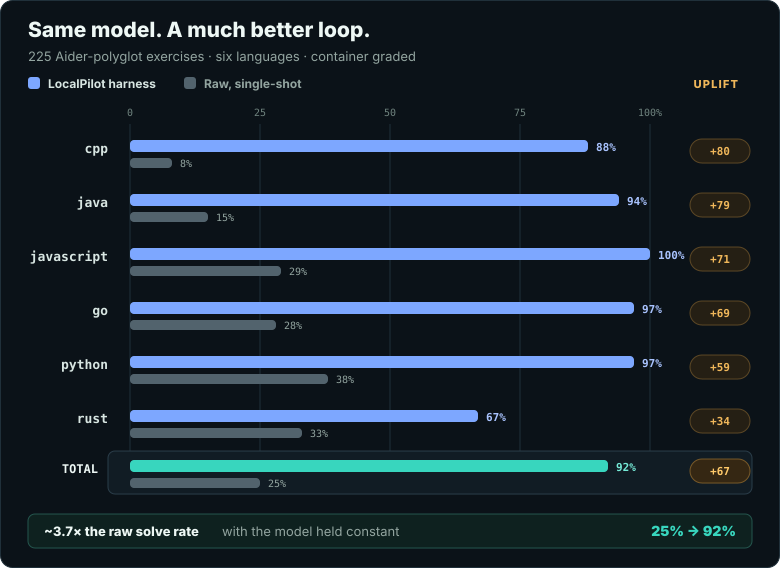
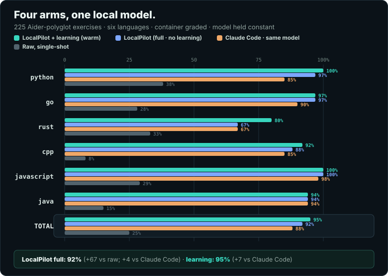

Run local models
LocalBox
Launch local GGUF models through llama.cpp and connect them to Claude Code, Codex, or LocalPilot.
Start here if: you need a local model running reliably.
Explore LocalBoxYour local AI toolkit
LocalStack brings four focused tools into one practical workflow: run a model, tune it for your machine, put it to work, and keep what it learns.
Local-first · No usage telemetry · Your data stays yours
How it fits together
Use only what you need today. Add the next piece when you are ready.
Privacy by design
LocalX does not collect your prompts, code, model activity, memories, benchmark results, or usage analytics. The local path stays local, with no LocalX account required.
Choose a hosted provider or download? That network action is explicit and goes only to the service you selected—not through LocalX.
Choose your starting point
Each project does one job and works on its own. Together, they form the LocalX toolchain.
Run local models
Launch local GGUF models through llama.cpp and connect them to Claude Code, Codex, or LocalPilot.
Start here if: you need a local model running reliably.
Explore LocalBoxTune your hardware
Find fast, stable runtime settings for your machine and export ready-to-use launcher profiles.
Use it when: the model runs, but not as well as it could.
Explore LocalBenchBuild with an agent
Drive any supported model through a provider-neutral coding agent with tools, permissions, and harness mode. It runs deep research with every web fetch disclosed and auditable, can ask before guessing at unclear requests, and another agent can coach it over MCP.
Use it when: you want the model to work across a codebase.
Explore LocalPilotKeep useful context
Turn reviewed sessions and project docs into searchable local memory. Manage it in a local web UI, serve it to agents over MCP, and sync it across devices — opt-in and end-to-end encrypted.
Use it when: your agent keeps relearning the same lessons.
Explore LocalMindA practical first run
Install the whole stack at one version — no Rust toolchain needed. Each download is checked against its published SHA-256 before anything is unpacked.
# Linux / macOS
curl -fsSL https://raw.githubusercontent.com/C0deGeek-dev/LocalPilot/main/install/install.sh | sh
# Windows
irm https://raw.githubusercontent.com/C0deGeek-dev/LocalPilot/main/install/install.ps1 | iexLaunch a GGUF model with LocalBox.
Let LocalBench find a stable profile for your machine.
Point LocalPilot at the model and start working.
Why the harness matters
The model stayed fixed. Every arm — raw inference, Claude Code, LocalPilot, and LocalPilot with reviewed memory — drove the same local model. This compares harnesses, not models: the Claude Code arm is Claude Code running that same local model, not a hosted frontier model.
25% 92%LocalPilot harness vs raw: +67 points
92% vs 88%LocalPilot without learning vs Claude Code
95% vs 88%LocalPilot with reviewed learning vs Claude Code


The benchmark covers 225 Aider-polyglot exercises in six languages, each graded in a network-isolated container. A 600-second timeout counts as unsolved.
LocalPilot's full run scored 92%, four points above Claude Code at 88%, before learning was enabled. Reviewed learning raised LocalPilot to 95%, extending that lead to seven points. Raw inference scored 25%.
The Claude Code arm is Claude Code driving the same local model through a compatible proxy — a harness-vs-harness comparison on one shared model, not a comparison against a hosted frontier model. Read the difference between harnesses, not the absolute score. This is one model and quant, and public-corpus absolutes may be affected by contamination.